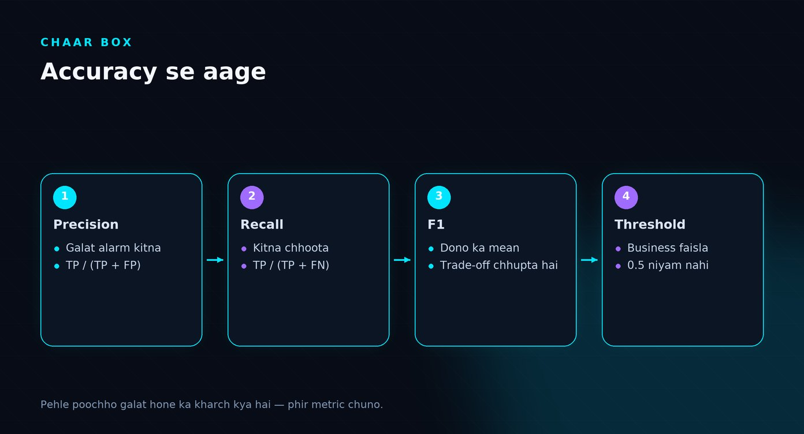
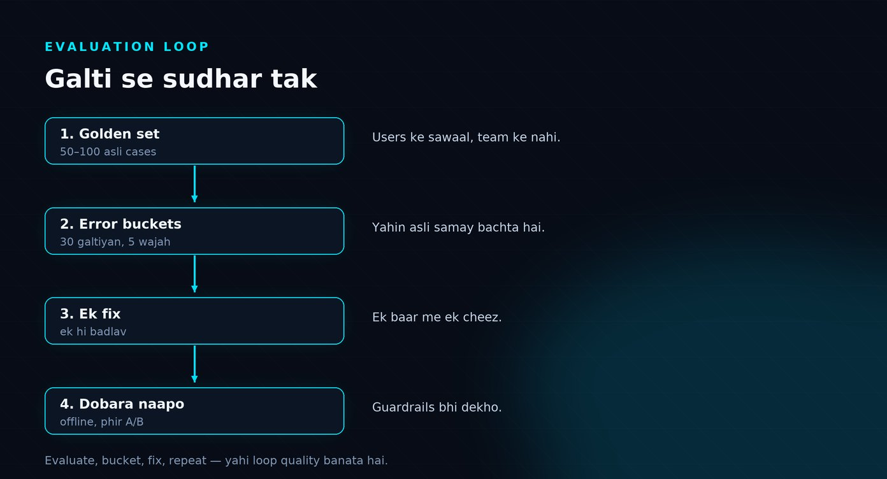

AI Model Evaluation: Accuracy Se Aage Kya Dekhein Guide
Ek team ne apna fraud detection model banaya aur 99.2% accuracy report ki. Leadership khush. Phir production me pata chala ki model ne ek bhi fraud nahi pakda — usne sabko “genuine” kaha, aur kyunki 100 me se sirf 1 transaction fraud hota hai, 99% accuracy apne aap aa gayi. Model bekaar tha, par number sundar tha. Yahi wajah hai ki AI model evaluation accuracy se shuru nahi hoti — accuracy se aage jati hai.
Is guide me main woh sab kuch kholunga jo ek model ko production me le jane se pehle dekhna chahiye: confusion matrix ka asli matlab, precision-recall ka trade-off, F1 kab dhokha deta hai, regression ke metrics, generative AI (LLM) ko kaise naapein jahan “sahi jawab” ek hi nahi hota, golden dataset kaise banayein, aur production ke woh numbers jo kisi offline benchmark me nahi dikhte.
Chhota jawab: Model evaluation ka matlab hai — pehle business sawaal ko metric me badalna, phir us metric ko aise data par naapna jo production jaisa ho. Accuracy sirf ek shuruaat hai; uske saath precision, recall, latency, cost, aur failure ka pattern dekhna padta hai. LLM ke liye rubric-based human review aur golden dataset zyada kaam ka hai, kisi single score se.
Accuracy ka dhokha
Accuracy ka matlab hai — kitne predictions sahi nikle. Yeh tab tak theek hai jab har class barabar ho. Jaise hi ek class bahut kam ho (fraud, disease, churn, spam), accuracy jhooth bolne lagti hai. 1% fraud wale data me “sab genuine” kehne wala model 99% accurate hoga.
Isliye pehla sawaal yeh nahi ki “accuracy kitni hai”, balki yeh hai — galat hone ka kya matlab hai? False positive (galat alarm) aur false negative (chhoot gaya case) ka kharch alag hota hai. Fraud me chhoota hua case mehnga hai; spam filter me galat email block hona mehnga hai. Metric isi kharch se aana chahiye, kisi general number se nahi.
Confusion matrix: chaar box jo sab batate hain
Binary classification me chaar natije hote hain: true positive (sahi pakda), true negative (sahi chhoda), false positive (galat alarm), false negative (chhoot gaya). In chaaron ka table confusion matrix hai, aur isse hi baaki sab metrics nikalte hain.
Precision = TP / (TP + FP). “Jinhe maine positive kaha, unme se kitne sach me positive the?” Yeh tab important hai jab galat alarm mehnga ho — spam filter, ya jab model ke bataye cases par team manually kaam karti ho.
Recall = TP / (TP + FN). “Jinme sach me problem thi, unme se kitne pakde?” Yeh tab important hai jab chhootna mehnga ho — cancer screening, fraud, security alert.
F1 score dono ka harmonic mean hai. Yeh ek convenient number hai, par iska nuksan yeh hai ki woh precision aur recall ke trade-off ko chhupa deta hai. Agar aapko pata hai ki false negative zyada mehnga hai, to F1 ke peeche mat bhaagein — recall dekhein aur precision ki keemat pata karein.

Threshold ek business decision hai
Model probability deta hai, faisla threshold se banta hai. 0.5 ka threshold koi natural niyam nahi hai. Agar false negative mehnga hai, threshold girao (0.3) — zyada log pakde jayenge, kuch galat bhi. Agar team ka bandwidth kam hai, threshold badhao (0.8) — kam cases, par zyada sahi.
Isliye evaluation me ek hi threshold par number dena adhoora hai. Threshold ke 5–6 values par precision-recall curve banao, aur business ke saath milkar woh point chuno jahan dono ka kharch kam ho. Yeh ek baithak ka kaam hai, mahine bhar ki tuning se zyada asar dalta hai.
Class imbalance ka ilaaj
Jab positive class 1% ho, to teen cheezein zaroori hain. Pehla — stratified split, taaki test set me bhi 1% hi ho. Doosra — class weights ya resampling, taaki model minority class ko ignore na kare. Teesra — metric badlo: accuracy ki jagah precision-recall AUC ya recall at fixed precision dekho.
Ek practical baat — PR-AUC (precision-recall curve ka area) imbalanced data me ROC-AUC se behtar picture deta hai. ROC-AUC bahut optimistic dikh sakta hai jab negative class bahut badi ho, kyunki false positives ka asar usme kam dikhta hai.
Regression me kya dekhein
Numbers predict karne wale model me MAE (average absolute galti), RMSE (badi galtiyon par zyada penalty) aur R² aam hain. Teeno ka apna matlab hai, par sabse zaroori cheez hai error ka distribution — sirf average nahi.
Maan lijiye delivery time predict kar rahe hain. Average error 20 minute hai, par 5% cases me 3 ghante ka error hai. Average theek lagta hai, par woh 5% customers naraz honge. Isliye residual plot dekhein, aur p95 error bhi naapein — “95% cases me galti kitni thi”.
MAPE (percentage error) se bachein jab values chhoti ho sakti hain — 2 minute ki galti 4 minute ke delivery par 50% ho jati hai. Yeh metric aise cases me bekaar picture deta hai.
LLM aur generative AI ko kaise naapein
Yahan “sahi jawab” ek hi nahi hota. “Refund policy samjhao” ke 10 achhe jawab ho sakte hain. Isliye purane metrics (accuracy, F1) seedhe lagu nahi hote — unke liye alag framework chahiye.
1. Golden dataset. 50–150 asli sawaal, har ek ke saath expected facts ka list aur ek rubric. Yeh sabse zaroori asset hai; iske bina baaki sab andaaza hai.
2. Rubric scoring. Har jawab ko 1–5 par naapo, par dimensions alag rakhein: factual correctness, completeness, tone, format, safety. Ek overall score sab kuch chhupa deta hai — ho sakta hai facts sahi hon par tone bahut rude ho.
3. LLM-as-judge. Ek doosre model se scoring karana sasta aur tez hai, par iske teen risk hain: judge ka apna bias (lambe jawab ko zyada score), position bias (jo pehle aaya use zyada), aur self-preference (apne family ka output pasand). Isliye judge ko rubric do, order badal kar test karo, aur 10% cases insaan se cross-check karao.
4. Pairwise comparison. Do model ke jawab do aur poocho “kaun behtar hai”. Yeh absolute score se zyada reliable hota hai, kyunki insaan comparison me consistent hota hai.
5. Task success. Aakhir me asli sawaal yeh hai — user ka kaam hua ya nahi. Chatbot ne ticket resolve kiya? Code chala? Email bhejne layak bana? Yeh binary metric kisi rubric se zyada sach bolta hai.

Error buckets: sabse zyada samay bachane wala kaam
Jab 100 jawab me 30 galat hon, unhe ginna bekaar hai — unhe baanto. Mere experience me aksar 4–6 bucket bante hain: retrieval miss, galat number, tone issue, format toota, refusal galat jagah, aur context se bahar ka claim. Ek baar bucket bane to pata chal jata hai ki 30 galtiyon me se 18 ek hi wajah se hain.
Yeh kaam manual lagta hai, par 2 ghante me ho jata hai aur PoorE mahine ki tuning ki disha tay kar deta hai. Bina bucketing ke team alag-alag cheezein fix karti rehti hai aur metric hilti nahi.
Production metrics jo benchmark me nahi dikhte
Latency. Average nahi, p95 dekhein. Average 800ms sundar lagta hai, par agar 5% requests 6 second le rahi hain to woh 5% users aapko gaali denge.
Cost per request. Token cost, embedding cost, vector DB query, aur retries. Ek chat turn ka asli kharch aksar andaaze se 3 guna zyada hota hai.
Refusal rate. Model kitni baar mana kar raha hai. Bahut zyada refusal bhi failure hai, chahe safe lage.
Fallback rate aur error rate. Kitni baar primary model fail hua aur backup par gaya. Yeh chhupa hua signal hai ki kuch tut raha hai.
User feedback. Thumbs up/down ka raw number bekaar hai; usko task success ke saath jodein. Ek thumbs down jahan user ne phir bhi kaam kar liya, woh alag case hai.
A/B test aur guardrails
Naya model purane se “behtar” lagta hai — par production me farq padega ya nahi, woh A/B test batata hai. 5–10% traffic naye model par bhejein, aur primary metric ke saath guardrail metrics bhi dekhein: latency, cost, error rate, complaints. Kabhi-kabhi quality 3% badhti hai aur cost 40% — yeh faisla business ka hai, engineer ka nahi.
Ek zaroori anushasan: ek baar me ek hi cheez badlein. Model, prompt, retrieval aur temperature ek saath badalne par pata nahi chalega ki farq kisne kiya. Chhoti team ke liye yeh sabse zyada samay bachata hai.
Offline aur online ka gap sabse zyada yahin dikhta hai. Offline eval ek sthir set par chalta hai, par production me sawaal badalte rehte hain — naye products, naye typos, naye season. Isliye mahine me ek baar golden set me 10 naye asli sawaal jodo aur woh purane hatao jo ab relevant nahi hain. Warna aapka benchmark dheere-dheere aisi cheez naapne lagega jo users poochhte hi nahi. Ek aur signal — model ke jawab ka confidence aur user ka behaviour. Jahan model confident tha par user ne turant dobara poocha, wahan kuch galat hai; woh cases golden set ke liye sabse achhe candidate hain.
Aath common galtiyan
1. Sirf accuracy. Imbalanced data me yeh jhooth bolti hai.
2. Test set me leakage. Training ka data test me aa gaya to score jhootha hai.
3. Ek hi threshold. Business ke hisaab se threshold chuno, default se nahi.
4. Benchmark par bharosa. Public benchmark aapki problem nahi naapta.
5. LLM judge ko final maanna. Woh bias rakhta hai; insaan se cross-check karo.
6. Sirf average latency. p95 dekho, warna 5% users ka anubhav chhup jata hai.
7. Cost ko metric na maanna. Quality ke saath cost bhi naapo, warna bill surprise dega.
8. Users ke sawaal na lena. Team ke saaf sawaal asli duniya se alag hote hain.
Mera anubhav
Ek resume-screening model par kaam karte waqt humne 94% accuracy report ki. Ek advisor ne poocha, “precision kitni hai?” Nikla 61% — matlab jinhe model ne shortlist kaha, unme se 39% galat the. Recruiters ka poora din un galat resumes par jata tha, aur unhone tool ka istemal hi chhod diya.
Uske baad humne threshold 0.5 se 0.75 kiya. Accuracy 94% se 89% aa gayi, par precision 84% ho gayi aur recruiters ne tool istemal karna shuru kiya. Seekh: metric woh chuno jo user ka kaam aasan kare, jo report me sundar lage woh nahi.
Doosri sikh — golden dataset banane me do din lagte hain aur woh do din sabse zyada fayde dete hain. Jab humne 80 asli sawaalon ka set banaya, pata chala ki 30% galtiyan sirf ek hi wajah se thi: resumes me “2023–Present” format parse nahi ho raha tha. Woh ek fix poore project ka sabse bada improvement tha.
Nateeja
Evaluation accuracy se shuru nahi hoti, business sawaal se hoti hai. Confusion matrix se precision aur recall nikalo, threshold business ke hisaab se chuno, imbalanced data me PR-AUC dekho, regression me p95 error dekho, aur LLM ke liye golden dataset + rubric + task success rakho. Production me latency, cost, refusal aur fallback bhi naapo.
Agar aaj ek cheez karni ho, to yeh: 50 asli cases ka golden set banao, unke jawab verify karo, aur ek simple script se har build par score nikalo. Yeh ek file poore project ki quality ka compass ban jati hai.
Aage padhein: unit testing — code ke liye wahi anushasan; LLM hallucination — ek khaas failure mode ka poora framework; aur AI ethics aur bias — subgroup-level evaluation kyun zaroori hai.
अक्सर पूछे जाने वाले सवाल
Precision aur recall me se kaunsa chunein?
Dekho galat hone ka kharch kya hai. Galat alarm mehnga ho to precision; chhootna mehnga ho to recall.
F1 score kaafi hai?
Convenient hai, par precision aur recall ka trade-off chhupa deta hai. Business ke hisaab se alag-alag dekho.
LLM ka evaluation kitne sample par karein?
Shuruaat 50–100 asli cases se karein. 30 par bhi pattern dikh jata hai, par 100 se confidence behtar hota hai.
Kya LLM-as-judge bharosemand hai?
Achha first filter hai, final answer nahi. Bias hota hai — order badlo, rubric do, aur 10% insaan se check karao.
Kitna score achha maana jaye?
Universal number nahi. Baseline se comparison karo aur business ka acceptable error rate tay karo.